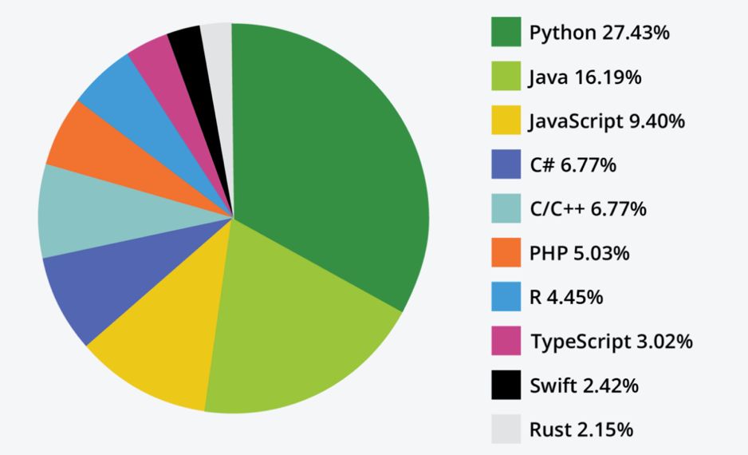

Applied scenarios are created for the Certified Secure Software
Lifecycle Professional (CSSLP) learning experience. The exercises provide additional
perspective by giving a brief glimpse into technical tasks performed by security
peers specializing in software. This content reinforces and expounds on the content
covered within the course.
The following material requires learners to have the minimum
experience to be considered a candidate for CSSLP and to have a basic working
knowledge of software development. The first section begins with “Getting Started
with Applied Scenarios,” which will help you begin installing Python and
familiarizing yourself with Visual Studio Code integrated development environment
(IDE). Then you will experience the learning activities in fictional scenarios
throughout the course. All software and tools referenced in the activities are
commonly used in the software security community, but usage does not indicate an
ISC2 endorsement or warranty.
Getting Started with Applied Scenarios
The CSSLP stresses the importance of system life cycle
considerations when facilitating secure software. To properly secure software
implementation, testing, and operations, developers and security practitioners need
quality tools to support their endeavors. All professionals dealing with software
typically require an integrated development environment (IDE). There are many IDEs
available, and organizations select them based on cost, speed, debugging, ease of
use, package management, and reliability. It is important to note that ease of use
often includes considerations for operating system (OS) compatibility.
Part 1 Instructions
To begin the technical applied scenarios, you may use any IDE
you find suitable. In the absence of a preference, Microsoft Visual Studio Code is
recommended. The guidance provided within will focus on the host-installed installed
VS Code. Relevant links are below:
Now we must select a programming language for our applied
scenarios. Python is a syntax-friendly, object-oriented programming language like
Java. Python offers a large standard library, and there is a strong community
presence that produces many package libraries to boost productivity, some of which
will be used in our applied scenarios. The following graphic describes the
percentage of top 10 programming languages.

Figure 1: Programming Languages by Learning
Part 2 Instructions
To get started with Python 3.x, the most recent major release
that is not backward compatible with Python 2.x, security practitioners must first
install Python. After installing VS Code on host machine, the following steps will
get you started:
Install Python Interpreter
Windows: Install Python from www.python.org/downloads/.
Use the Download Python 3.x button at the top of the
page. Follow the installation prompts, taking the defaults. Verify
installation from cmd using py -3 -version.
Linux: Most Linux versions, such as Ubuntu, include Python 3. Verify
using python3 –version from the terminal.
Mac: System installation of Python on macOS requires package management
such as Homebrew. To install Python 3 using Homebrew, enter use brew
install python3 from the terminal. Verify using python3
–version from the terminal.
Install Python Extension
Open Visual Studio Code.
Navigate to extensions. Ctrl+Shift+X on Windows.
Install Python (ms-python).
Open or create a python file to verify setup.
From Visual Studio Code, navigate to explorer. Ctrl+Shift+E on
Windows.
Click “Open Folder” and select where you want to save the Applied
scenarios content.
Create a new file test.py by hovering over the top of the
folder structure or by navigating to main menu (top left) > File
> “New File…”
Add the line: print("Hello, ISC2!") and save the file.
Ctrl+S on Windows.
Run the python file in the terminal. Run > “Run Without
Debugging”. Ctrl+F5 on Windows.
If the terminal window within Visual Studio Code prints
“Hello, ISC2!”, everything is set up and ready to go.
Excellente Technologies creates many software components that
are marketed and distributed via downstream suppliers. The business unit has
provided feedback that suppliers have observed a downward trend in adoption of
software components due to lack of trust. The Chief Technology Officer (CTO) wants
Security Manager Alex to provide a proof-of-concept solution that will bolster
confidence in software components by ensuring integrity is maintained throughout the
software supply chain.
After some research, Alex has decided that the integrity of the
software can be guaranteed using hashes. Hashing allows someone to generate a unique
fixed-length value for a variable-length input or object. The hash for each
component will be posted on the company's official website, which can be viewed and
verified by consumers.
Part 1 Instructions
Python offers a popular lightweight open-source hashing library
hashlib. Alex will lead us to use hashlib to capture a known good
state for SoftwareComponent87 (i.e., SC87.zip) by creating a SHA3 256bit hash.
From Visual Studio Code, navigate to explorer. Ctrl+Shift+E on Windows.
Click “Open Folder” and select where you want to save the Applied
scenarioscontent.
Create a new file Hashing.pyby hovering over the top
of the folder structure or by navigating to main menu (top left) > File
> “New File…”
Add the following lines to the python script:
1. import sys 2. import hashlib 3. 4. # 64kb
chunks in case of large files 5. BUF_SIZE = 65536 6. 7. # create
sha3 hash object 8. sha3 = hashlib.sha3_256() 9. 10. # read the
file object into memory 11. with open(r'SC87.zip', 'rb') as f: 12.
while True: 13. data = f.read(BUF_SIZE) 14. if not data: 15.
break 16. # update hash 17. sha3.update(data) 18. 19. #
print hash to console 20. print("SHA3-256:
{0}".format(sha3.hexdigest()))
Note: Adjusting the file path depends on OS environment and
the file's relative path. The easiest way is to place SC87.zip into the same
directory as Hashing.py.
Run the python file in the terminal. Run > “Run Without
Debugging”. Ctrl+F5 on Windows.
This will suffice for proof of concept for integrity. If the
software component is altered or replaced with a rogue file with the same name,
the hash produced by that file will not match what we produced.
Be prepared to answer the questions and share your findings
with the class.
What is the hash?
What happens when you run it again? Why?
What other one-way algorithms does hashlib support?
Applied Scenario: Static Code Analysis
Excellente Technologies is working on determining the technical
debt and risk for reusing a portion of a legacy Python code repository that was
developed before software security standards were implemented at the organization.
As the security reviewer, Alex decided to leverage a Python static code analysis
tool to uncover any potential issues. After a quick analysis of alternatives, Alex
decides to preliminarily scan using the open-source library bandit to determine what
security-related items may need to be addressed in the legacy code.
Part 1 Instructions
Install bandit using PyPI. From inside Visual Studio Code,
using the terminal, execute pip install bandit
Run bandit helper function. From inside Visual Studio Code,
using the terminal, execute bandit -h to display options for executing
bandit. Inspect the bandit options and syntax.
Check legacy.py for defects. From inside Visual Studio Code,
using the terminal, execute bandit -r path/to/your/code
Be prepared to answer the questions and share your findings
with the class.
How many results did you get?
If there are too many, you could set a threshold for result
reporting. What potential defects did you find?
Why do you think the phrasing of the previous question was
“potential defects”?
Does the tool attempt to provide guidance on Type I errors?
Applied Scenario: Software Metrics
Excellente Technologies is working on creating a software system
that will be used to maintain a nuclear power plant throughout its estimated 60-year
lifespan. Due to the length of operations for the plant, the software will be
maintained multi-generationally, which causes legitimate concerns about the
introduction of software regressions across time. To help safeguard against tribal
knowledge and regressions, the software development plan (SDP) includes
considerations for autogenerating documentation and sets standards for code quality
to include style and metrics. Metrics listed include McCabe’s complexity, which is
better known as cyclomatic complexity, and source lines of code (SLOC). How can we
gather these metrics?
Part 1 Instructions
Follow Alex’s steps of using the Python library Radon to support
gathering example metrics.
Checking Code Maintainability
Install Radon using PyPI. From inside Visual Studio Code, using
the terminal, execute pip install radon
Run Radon helper function. From inside Visual Studio Code,
using the terminal, execute radon -h to display options for gathering
metrics.
Gather software complexity metrics for NuclearFusion.py. From
inside Visual Studio Code, using the terminal, navigate to the folder containing
NuclearFusion.py and execute radon cc nuclearfusion.py
What is cyclomatic complexity? Is the metric per function, file,
or reactor based on outputs? What do the letters mean? Use radon -h as needed.
Gather raw software metrics for NuclearFusion.py. From inside
Visual Studio Code, using the terminal, navigate to the folder containing
NuclearFusion.py and execute radon raw nuclearfusion.py
Be prepared to answer the questions and share your findings
with the class.
What was the SLOC for NuclearFusion.py? What other metrics were
gathered?
Applied Scenario: Data Privacy and Testing
Excellente Technologies is working on an application enhancement
for a healthcare company that routinely handles sensitive information. As part of a
contract agreement, the healthcare company is providing Excellente access to part of
its source code repository and has provided test data for verification activities.
Alex has been assigned to stage the test data for inputs for the application’s new
features. Alex begins by uncompressing the data delivery from the healthcare
company, and Alex is shocked to discover that the data has real personally
identifiable information (PII).
Excellente Technologies' legal team will not allow Alex to use
the information as delivered, and the Chief Information Security Officer (CISO) has
worked with them to receive buy-in for conducting data anonymization (i.e., a
process that removes the association between the identifying dataset and the data
subject).
The first step to anonymizing personal data is to define
personal data and then identify instances in the dataset. Identifiable information
is direct or indirect information that leads to identifying a person.
Personal Information Includes:
Name
Birthday
Address
Phone number
Email
After data is anonymized properly, it is no longer considered
sensitive. This differs from the term pseudonymization, which is a type of
de-identification that both removes the association with a data subject and adds an
association between a particular set of characteristics relating to the data subject
and one or more pseudonyms where it is still possible to aggregate information to
determine the person of origin.
Consider the following progression for data privacy:
Personal Data: Bernhard Avenretti (804-222-1111) had lipoplasty on 7/19/2022 and
1/19/2023. His provider was Dr. Fatima Ferreira.
Pseudonymization: Patient X1 had lipoplasty on 7/19/2022 and 1/19/2023.
The provider was Dr. Fatima Ferreira.
Anonymization: A patient had repeat medical procedures on 7/19/2022
and 1/19/2023.
After the patient information is pseudonymized, it may still be
possible to figure out the person of origin is Bernhard. After anonymization, it is
not possible to logically deduce origin.
The test data scenario is a bit different. Alex cannot simply
remove attributes for patients, as those fields will be required to conduct proper
testing. In this case, Alex must randomize, mask, or tokenize the values.
Part 1 Instructions
Again, Alex will use Python. pandas is a powerful and
easy to use open-source data analysis and manipulation tool that can assist. The
combination of pandas and numpy to solve data science and extract,
transform, and load (ETL) problems is quite common.
Data Privacy with pandas & numpy
Install pandas using PyPI. From inside Visual Studio Code,
using the terminal, execute pip install pandas
Install numpy using PyPI. From inside Visual Studio Code, using
the terminal, execute pip install numpy
The patients.csv represents the patient dataset after
Alex has already started pseudonymizing the data. Open the file and inspect the
attributes contained in the data. After inspecting, Alex decides to remove the
address field to get closer to anonymization.
Create a Privacy.py file to manipulate the data. Hover over the
top of the folder structure or by navigating to main menu (top left) >
File > “New File…”
Add the following lines to the python script:
1. import pandas as pd 2. import numpy as
np 3. 4. # load patients into pandas dataframe 5. df =
pd.read_csv('patients.csv') 6. 7. # remove street address 8.
df.drop('ADDRESS',axis=1,inplace=True) 9. 10. # save data 11.
df.to_csv('patients2.csv', index=False)
Another possibility might include using label encoding to
anonymize sensitive data further. Label encoding is typically used to convert
categorical attributes, like T-shirt sizes, into numeric representations (e.g.,
small, medium, large becomes 1, 2, 3). Label encoding could also be used to
obfuscate names by replacing each last name with a number. Let’s use a popular data
science library, sklearn, to label encode the last name (i.e., “LAST”) to
further obfuscate the patient data.
Comment out the previous Python code. Highlight all the line
and hit Crtl+K, Crtl+C or place a # in front of each line. The result should
resemble the following.
# import
pandas as pd # import numpy as np # # load patients into pandas
dataframe # df = pd.read_csv('patients.csv') # # remove street
address # df.drop('ADDRESS', 1) # # save
data #
df.to_csv('patients2.csv', index=False)
Install sklearn using PyPI. From inside Visual Studio Code,
using the terminal, execute pip install scikit-learn
Install sklearn-pandas using PyPI. From inside Visual Studio
Code, using the terminal, execute pip install sklearn-pandas
Add the following lines to the python script:
1.
import pandas as pd 2. import warnings 3. from
sklearn.preprocessing import LabelEncoder 4. from sklearn_pandas import
DataFrameMapper 5. 6. # suppress jagged arrays for exercise 7.
warnings.filterwarnings("ignore") 8. 9. # load patients into
pandas dataframe 10. df =
pd.read_csv('patients2.csv') 11. 12. # try encode last name
column 13. encoders = [(["LAST"], LabelEncoder())] 14. mapper =
DataFrameMapper(encoders, df_out=True) 15. label_col =
mapper.fit_transform(df.copy()) 16. df =
pd.concat([df.drop(columns=["LAST"]), label_col],
axis="columns") 17. 18. # save data 19.
df.to_csv('patients3.csv', index=False)
Data privacy is an especially important risk topic. Several
companies have been subjected to astronomical fines. The European Union’s
General Data Protection Regulation (GDPR) strongly encourages proactive risk
mitigations for data privacy by ensuring solutions are engineered in accordance
with regulations. The libraries used above are very feature rich, and basics
have barely been addressed. Feel free to pursue more capabilities through
self-study to better understand how they could support compliance for PII, PHI,
or even tokenization for PCI-DSS.
Python, and other programming languages, can be used for more
than one-time tasks. High-level languages can be used to automate security
workflows, integrate multiple tools (e.g., port scanner and post scan data
analysis), and create powerful custom tools.
Python has a library for everything. For example, Scapy is an
interactive packet manipulation library capable of forging and decoding traffic
packets. Scapy can read PCAP files, a popular format for capturing traffic used and
produced by popular cybersecurity tools such WireShark and tcpdump. The following
simple example sends an ICMP echo request packet and displays attributes of a return
packet.
# if
response, show the dissected packet if p: p.show()
If we get an echo reply from the testsubject, we know both hosts
have their TCP/IP stacks configured correctly and the target device is reachable and
available.
Instructions
Now let’s modify our tool to send an HTTP GET request and parse
the response for URLs. Here we can use the Python library BeautifulSoup to continue
to extend our tool.
import sys import requests from scapy.all import
sr1, IP, ICMP from bs4 import BeautifulSoup
# url under test testsubject =
'https://puttarget.here'
# send HTTP
GET and capture the response response = requests.get(testsubject) #
begin parse response... soup = BeautifulSoup(response.text,
'html.parser') l = '' for link in soup.find_all('a'): l =
link.get('href') if l[0:4] == 'http': # url found -->
print print(link.get('href'))
After being granted permission, if we were to run this tool at
the time of writing against https://www.isc2.org,
the following results would be returned:
We could further modify the tool for general housekeeping by
declaring the interpreter, adding error handling, and supporting command line
execution of the tool, the results of which will be displayed below. Imagine the
amount of time a security practitioner would spend manually inspecting each
test URL. Secure software practitioners can assist other security-minded
practitioners in gaining organizational efficiency.
#!/usr/bin/env python3
import
sys import requests from scapy.all import sr1, IP, ICMP from
bs4 import BeautifulSoup
try:
# url under test testsubject =
'https://puttarget.here'
# override test subject if passed command args if
(len(sys.argv) == 1) & ('http' in sys.argv[0]): testsubject =
sys.argv[0]
# send HTTP GET and capture the response response
= requests.get(testsubject) # begin parse response... soup =
BeautifulSoup(response.text, 'html.parser') l = '' for link in
soup.find_all('a'): l = link.get('href') if l[0:4] ==
'http': # url found -->
print print(link.get('href'))
except: print("An error has occured. Test subject
may not be available.")
else: print("URL search completed without
errors.")
Security practitioners can gain perspective by seeking to
understand stakeholders within the organization. For example, software developers
may face many demands—including staying abreast of modern technologies, gaining
project domain knowledge, and estimating time. Sometimes business constraints make
it difficult to keep security at the forefront of software project efforts. As
secure software practitioners, ensure that security improvements are integrated into
development pipelines and workflows.
While focusing on many security tools, third-party libraries are
still the chief concern. Several issues can arise from organizations that integrate
unvetted third-party libraries into source code repositories. These problems include
licensing issues, vulnerabilities, or malicious code.
One type of tool that can assist organizations with third-party
library vetting is software composition analysis (SCA). SCA can analyze code to
determine licensing of components, dependencies, and vulnerabilities associated with
dependencies.
Excellente Technologies decides to use ScanCode, which is an
open-source Apache-2.0 licensed tool that runs on Windows, Linux, and macOS and is
available on GitHub. ScanCode can be installed as an application, and the source
could be fetched from GitHub or installed as a package.
Instructions
Alex will walk us through how to install the package with the
Python package manager (e.g., PyPI).
Checking Third-Party Libraries
Install ScanCode using PyPI. From inside Visual Studio Code,
using the terminal, execute pip install scancode-toolkit
Run ScanCode helper function. From inside Visual Studio Code,
using the terminal, execute scancode -h to display options for
executing ScanCode.
Look through the options. ScanCode can check
for package dependencies, license usage, vulnerabilities, or data points of
interest (i.e., think emails or websites).
Check JGroups for license considerations and output as HTML.
From inside Visual Studio Code, using the terminal, navigate to the
folder containing JGroups and execute scancode -l JGroups --html
LicenseResults.html
Open the newly generated LicenseResults.html. Are there any
restrictive open-source licensing standards that may be considered
organizational risks, such as copyleft licenses? How might you adjust the flags
to run a dependency check? Could you change the format of the output into a
format that could be consumed as part of your organization’s continuous
integration and continuous delivery/continuous deployment (CI/CD) pipeline?
Secure software life cycle professionals should understand that
the words “software” and “security” when used together may refer to different things
within the context of writing or conversations. Software security may reference
securing the organizational operations related to the engineering of software
products. Within the context of development, we may implement technical development
pipeline safeguards such as data encryption or secure methods of generating
infrastructure as code (IaC). Software security may also be used to reference the
assurance activities aimed at bolstering organizational confidence that developed
source code is reasonably free of defects using technical tooling such as
Bandit. Lastly, an organization's security posture may be enhanced by the
introduction of automated security efforts combined with manual processes. To
support concepts such as information security continuous monitoring (ISCM), software
and scripting expertise is now required to efficiently tailor solutions to meet
organizational demands.
Through the various exercises, we have only begun to scratch the
surface of leveraging software to facilitate security. Through the process, we have
started to investigate hashing using python to provide a means to guarantee our
files have not been adulterated. We have inspected third-party libraries for
licensing and dependency risks. We have reduced the risk of using sensitive data for
testing by anonymizing data. We have gathered software metrics and conducted SAST
scans, which could be tied into the development process to empower strategic and
business level managers to make proactive quality and security decisions. Finally,
we used software development to automate a security assessment of URLs that would
likely take thirty minutes manually to take about 3 seconds.
You have performed all these security learning activities using
freely available tools and a high-level programming language. The future is bright
for security practitioners who can provide economy-of-scale security automation
mechanisms through using software prowess. Go forward thinking about how you might
use software technology to bolster your enterprise and how your enterprise will
develop secure bolstered software.
Applied Scenarios
Applied Scenarios Introduction
Applied scenarios are created for the Certified Secure Software Lifecycle Professional (CSSLP) learning experience. The exercises provide additional perspective by giving a brief glimpse into technical tasks performed by security peers specializing in software. This content reinforces and expounds on the content covered within the course.
The following material requires learners to have the minimum experience to be considered a candidate for CSSLP and to have a basic working knowledge of software development. The first section begins with “Getting Started with Applied Scenarios,” which will help you begin installing Python and familiarizing yourself with Visual Studio Code integrated development environment (IDE). Then you will experience the learning activities in fictional scenarios throughout the course. All software and tools referenced in the activities are commonly used in the software security community, but usage does not indicate an ISC2 endorsement or warranty.
Getting Started with Applied Scenarios
The CSSLP stresses the importance of system life cycle considerations when facilitating secure software. To properly secure software implementation, testing, and operations, developers and security practitioners need quality tools to support their endeavors. All professionals dealing with software typically require an integrated development environment (IDE). There are many IDEs available, and organizations select them based on cost, speed, debugging, ease of use, package management, and reliability. It is important to note that ease of use often includes considerations for operating system (OS) compatibility.
Part 1 Instructions
To begin the technical applied scenarios, you may use any IDE you find suitable. In the absence of a preference, Microsoft Visual Studio Code is recommended. The guidance provided within will focus on the host-installed installed VS Code. Relevant links are below:
Now we must select a programming language for our applied scenarios. Python is a syntax-friendly, object-oriented programming language like Java. Python offers a large standard library, and there is a strong community presence that produces many package libraries to boost productivity, some of which will be used in our applied scenarios. The following graphic describes the percentage of top 10 programming languages.
Figure 1: Programming Languages by Learning
Part 2 Instructions
To get started with Python 3.x, the most recent major release that is not backward compatible with Python 2.x, security practitioners must first install Python. After installing VS Code on host machine, the following steps will get you started:
If the terminal window within Visual Studio Code prints “Hello, ISC2!”, everything is set up and ready to go.
Relevant links:
Applied Scenario: Hashing in Action
Excellente Technologies creates many software components that are marketed and distributed via downstream suppliers. The business unit has provided feedback that suppliers have observed a downward trend in adoption of software components due to lack of trust. The Chief Technology Officer (CTO) wants Security Manager Alex to provide a proof-of-concept solution that will bolster confidence in software components by ensuring integrity is maintained throughout the software supply chain.
After some research, Alex has decided that the integrity of the software can be guaranteed using hashes. Hashing allows someone to generate a unique fixed-length value for a variable-length input or object. The hash for each component will be posted on the company's official website, which can be viewed and verified by consumers.
Part 1 Instructions
Python offers a popular lightweight open-source hashing library hashlib. Alex will lead us to use hashlib to capture a known good state for SoftwareComponent87 (i.e., SC87.zip) by creating a SHA3 256bit hash.
Hashing a File
1. import sys
2. import hashlib
3.
4. # 64kb chunks in case of large files
5. BUF_SIZE = 65536
6.
7. # create sha3 hash object
8. sha3 = hashlib.sha3_256()
9.
10. # read the file object into memory
11. with open(r'SC87.zip', 'rb') as f:
12. while True:
13. data = f.read(BUF_SIZE)
14. if not data:
15. break
16. # update hash
17. sha3.update(data)
18.
19. # print hash to console
20. print("SHA3-256: {0}".format(sha3.hexdigest()))
Note: Adjusting the file path depends on OS environment and the file's relative path. The easiest way is to place SC87.zip into the same directory as Hashing.py.
This will suffice for proof of concept for integrity. If the software component is altered or replaced with a rogue file with the same name, the hash produced by that file will not match what we produced.
Relevant links:
Part 2 Instructions
Be prepared to answer the questions and share your findings with the class.
What is the hash?
What happens when you run it again? Why?
What other one-way algorithms does hashlib support?
Applied Scenario: Static Code Analysis
Excellente Technologies is working on determining the technical debt and risk for reusing a portion of a legacy Python code repository that was developed before software security standards were implemented at the organization. As the security reviewer, Alex decided to leverage a Python static code analysis tool to uncover any potential issues. After a quick analysis of alternatives, Alex decides to preliminarily scan using the open-source library bandit to determine what security-related items may need to be addressed in the legacy code.
Part 1 Instructions
Relevant links:
Part 2 Instructions
Be prepared to answer the questions and share your findings with the class.
How many results did you get?
If there are too many, you could set a threshold for result reporting. What potential defects did you find?
Why do you think the phrasing of the previous question was “potential defects”?
Does the tool attempt to provide guidance on Type I errors?
Applied Scenario: Software Metrics
Excellente Technologies is working on creating a software system that will be used to maintain a nuclear power plant throughout its estimated 60-year lifespan. Due to the length of operations for the plant, the software will be maintained multi-generationally, which causes legitimate concerns about the introduction of software regressions across time. To help safeguard against tribal knowledge and regressions, the software development plan (SDP) includes considerations for autogenerating documentation and sets standards for code quality to include style and metrics. Metrics listed include McCabe’s complexity, which is better known as cyclomatic complexity, and source lines of code (SLOC). How can we gather these metrics?
Part 1 Instructions
Follow Alex’s steps of using the Python library Radon to support gathering example metrics.
Checking Code Maintainability
What is cyclomatic complexity? Is the metric per function, file, or reactor based on outputs? What do the letters mean? Use radon -h as needed.
Relevant links:
Part 2 Instructions
Be prepared to answer the questions and share your findings with the class.
What was the SLOC for NuclearFusion.py? What other metrics were gathered?
Applied Scenario: Data Privacy and Testing
Excellente Technologies is working on an application enhancement for a healthcare company that routinely handles sensitive information. As part of a contract agreement, the healthcare company is providing Excellente access to part of its source code repository and has provided test data for verification activities. Alex has been assigned to stage the test data for inputs for the application’s new features. Alex begins by uncompressing the data delivery from the healthcare company, and Alex is shocked to discover that the data has real personally identifiable information (PII).
Excellente Technologies' legal team will not allow Alex to use the information as delivered, and the Chief Information Security Officer (CISO) has worked with them to receive buy-in for conducting data anonymization (i.e., a process that removes the association between the identifying dataset and the data subject).
The first step to anonymizing personal data is to define personal data and then identify instances in the dataset. Identifiable information is direct or indirect information that leads to identifying a person.
Personal Information Includes:
After data is anonymized properly, it is no longer considered sensitive. This differs from the term pseudonymization, which is a type of de-identification that both removes the association with a data subject and adds an association between a particular set of characteristics relating to the data subject and one or more pseudonyms where it is still possible to aggregate information to determine the person of origin.
Consider the following progression for data privacy:
After the patient information is pseudonymized, it may still be possible to figure out the person of origin is Bernhard. After anonymization, it is not possible to logically deduce origin.
The test data scenario is a bit different. Alex cannot simply remove attributes for patients, as those fields will be required to conduct proper testing. In this case, Alex must randomize, mask, or tokenize the values.
Part 1 Instructions
Again, Alex will use Python. pandas is a powerful and easy to use open-source data analysis and manipulation tool that can assist. The combination of pandas and numpy to solve data science and extract, transform, and load (ETL) problems is quite common.
Data Privacy with pandas & numpy
The patients.csv represents the patient dataset after Alex has already started pseudonymizing the data. Open the file and inspect the attributes contained in the data. After inspecting, Alex decides to remove the address field to get closer to anonymization.
1. import pandas as pd
2. import numpy as np
3.
4. # load patients into pandas dataframe
5. df = pd.read_csv('patients.csv')
6.
7. # remove street address
8. df.drop('ADDRESS',axis=1,inplace=True)
9.
10. # save data
11. df.to_csv('patients2.csv', index=False)
Another possibility might include using label encoding to anonymize sensitive data further. Label encoding is typically used to convert categorical attributes, like T-shirt sizes, into numeric representations (e.g., small, medium, large becomes 1, 2, 3). Label encoding could also be used to obfuscate names by replacing each last name with a number. Let’s use a popular data science library, sklearn, to label encode the last name (i.e., “LAST”) to further obfuscate the patient data.
# import pandas as pd
# import numpy as np
# # load patients into pandas dataframe
# df = pd.read_csv('patients.csv')
# # remove street address
# df.drop('ADDRESS', 1)
# # save data
# df.to_csv('patients2.csv', index=False)
1. import pandas as pd
2. import warnings
3. from sklearn.preprocessing import LabelEncoder
4. from sklearn_pandas import DataFrameMapper
5.
6. # suppress jagged arrays for exercise
7. warnings.filterwarnings("ignore")
8.
9. # load patients into pandas dataframe
10. df = pd.read_csv('patients2.csv')
11.
12. # try encode last name column
13. encoders = [(["LAST"], LabelEncoder())]
14. mapper = DataFrameMapper(encoders, df_out=True)
15. label_col = mapper.fit_transform(df.copy())
16. df = pd.concat([df.drop(columns=["LAST"]), label_col], axis="columns")
17.
18. # save data
19. df.to_csv('patients3.csv', index=False)
Data privacy is an especially important risk topic. Several companies have been subjected to astronomical fines. The European Union’s General Data Protection Regulation (GDPR) strongly encourages proactive risk mitigations for data privacy by ensuring solutions are engineered in accordance with regulations. The libraries used above are very feature rich, and basics have barely been addressed. Feel free to pursue more capabilities through self-study to better understand how they could support compliance for PII, PHI, or even tokenization for PCI-DSS.
Relevant links:
Applied Scenario: Building Custom Security Tools
Python, and other programming languages, can be used for more than one-time tasks. High-level languages can be used to automate security workflows, integrate multiple tools (e.g., port scanner and post scan data analysis), and create powerful custom tools.
Python has a library for everything. For example, Scapy is an interactive packet manipulation library capable of forging and decoding traffic packets. Scapy can read PCAP files, a popular format for capturing traffic used and produced by popular cybersecurity tools such WireShark and tcpdump. The following simple example sends an ICMP echo request packet and displays attributes of a return packet.
import sys
from scapy.all import sr1, IP, ICMP
# send layer 3 packet
p=sr1(IP(dst='puttarget.here')/ICMP())
# if response, show the dissected packet
if p:
p.show()
If we get an echo reply from the testsubject, we know both hosts have their TCP/IP stacks configured correctly and the target device is reachable and available.
Instructions
Now let’s modify our tool to send an HTTP GET request and parse the response for URLs. Here we can use the Python library BeautifulSoup to continue to extend our tool.
import sys
import requests
from scapy.all import sr1, IP, ICMP
from bs4 import BeautifulSoup
# url under test
testsubject = 'https://puttarget.here'
# send layer 3 packet
p=sr1(IP(dst=testsubject.replace('https://', ''))/ICMP())
# if response scrape the website for urls
if p:
# send HTTP GET and capture the response
response = requests.get(testsubject)
# begin parse response...
soup = BeautifulSoup(response.text, 'html.parser')
l = ''
for link in soup.find_all('a'):
l = link.get('href')
if l[0:4] == 'http':
# url found --> print
print(link.get('href'))
After being granted permission, if we were to run this tool at the time of writing against https://www.isc2.org, the following results would be returned:
We could further modify the tool for general housekeeping by declaring the interpreter, adding error handling, and supporting command line execution of the tool, the results of which will be displayed below. Imagine the amount of time a security practitioner would spend manually inspecting each test URL. Secure software practitioners can assist other security-minded practitioners in gaining organizational efficiency.
#!/usr/bin/env python3
import sys
import requests
from scapy.all import sr1, IP, ICMP
from bs4 import BeautifulSoup
try:
# url under test
testsubject = 'https://puttarget.here'
# override test subject if passed command args
if (len(sys.argv) == 1) & ('http' in sys.argv[0]):
testsubject = sys.argv[0]
# send layer 3 packet
p=sr1(IP(dst=testsubject.replace('https://', ''))/ICMP())
# if response scrape the website for urls
if p:
# send HTTP GET and capture the response
response = requests.get(testsubject)
# begin parse response...
soup = BeautifulSoup(response.text, 'html.parser')
l = ''
for link in soup.find_all('a'):
l = link.get('href')
if l[0:4] == 'http':
# url found --> print
print(link.get('href'))
except:
print("An error has occured. Test subject may not be available.")
else:
print("URL search completed without errors.")
Relevant links:
Applied Scenario: Software Composition Analysis (SCA)
Security practitioners can gain perspective by seeking to understand stakeholders within the organization. For example, software developers may face many demands—including staying abreast of modern technologies, gaining project domain knowledge, and estimating time. Sometimes business constraints make it difficult to keep security at the forefront of software project efforts. As secure software practitioners, ensure that security improvements are integrated into development pipelines and workflows.
While focusing on many security tools, third-party libraries are still the chief concern. Several issues can arise from organizations that integrate unvetted third-party libraries into source code repositories. These problems include licensing issues, vulnerabilities, or malicious code.
One type of tool that can assist organizations with third-party library vetting is software composition analysis (SCA). SCA can analyze code to determine licensing of components, dependencies, and vulnerabilities associated with dependencies.
Excellente Technologies decides to use ScanCode, which is an open-source Apache-2.0 licensed tool that runs on Windows, Linux, and macOS and is available on GitHub. ScanCode can be installed as an application, and the source could be fetched from GitHub or installed as a package.
Instructions
Alex will walk us through how to install the package with the Python package manager (e.g., PyPI).
Checking Third-Party Libraries
Look through the options. ScanCode can check for package dependencies, license usage, vulnerabilities, or data points of interest (i.e., think emails or websites).
Open the newly generated LicenseResults.html. Are there any restrictive open-source licensing standards that may be considered organizational risks, such as copyleft licenses? How might you adjust the flags to run a dependency check? Could you change the format of the output into a format that could be consumed as part of your organization’s continuous integration and continuous delivery/continuous deployment (CI/CD) pipeline?
Relevant links:
Applied Scenario: Course Conclusion
Secure software life cycle professionals should understand that the words “software” and “security” when used together may refer to different things within the context of writing or conversations. Software security may reference securing the organizational operations related to the engineering of software products. Within the context of development, we may implement technical development pipeline safeguards such as data encryption or secure methods of generating infrastructure as code (IaC). Software security may also be used to reference the assurance activities aimed at bolstering organizational confidence that developed source code is reasonably free of defects using technical tooling such as Bandit. Lastly, an organization's security posture may be enhanced by the introduction of automated security efforts combined with manual processes. To support concepts such as information security continuous monitoring (ISCM), software and scripting expertise is now required to efficiently tailor solutions to meet organizational demands.
Through the various exercises, we have only begun to scratch the surface of leveraging software to facilitate security. Through the process, we have started to investigate hashing using python to provide a means to guarantee our files have not been adulterated. We have inspected third-party libraries for licensing and dependency risks. We have reduced the risk of using sensitive data for testing by anonymizing data. We have gathered software metrics and conducted SAST scans, which could be tied into the development process to empower strategic and business level managers to make proactive quality and security decisions. Finally, we used software development to automate a security assessment of URLs that would likely take thirty minutes manually to take about 3 seconds.
You have performed all these security learning activities using freely available tools and a high-level programming language. The future is bright for security practitioners who can provide economy-of-scale security automation mechanisms through using software prowess. Go forward thinking about how you might use software technology to bolster your enterprise and how your enterprise will develop secure bolstered software.